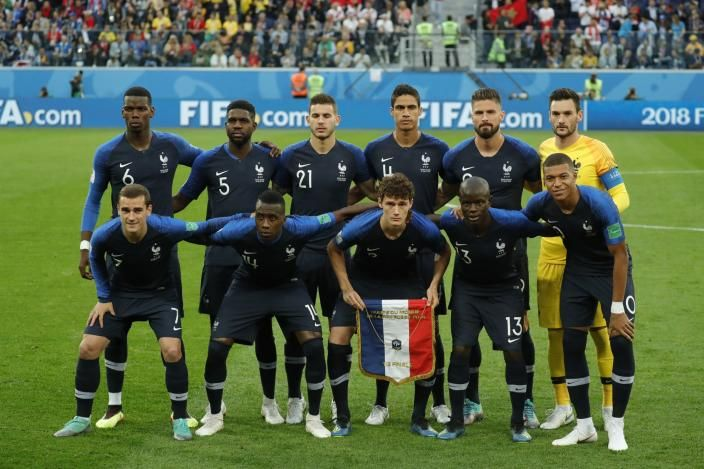

My Interest in Sports

Sports have always been a big part of my life. They teach discipline, fitness, teamwork, and mental strength. Whether it’s fast-paced action or strategy-based competition, every sport has something unique to offer.
Why I Like Sports
- They keep the mind and body active
- They help build discipline and routine
- They bring people together
- They are fun to watch and exciting to play
Popular Sports Around the World

- Football (Soccer) — the most watched sport globally
- Basketball — fast-paced with tons of skill
- Cricket — extremely popular across Asia
- Tennis — combines speed, focus, and technique
- Boxing — requires mental and physical toughness
Fun Sports Facts

- The Olympic Games started more than 2,700 years ago in Greece.
- The first basketball hoop was literally a peach basket.
- Football goal nets were introduced only in 1891.
- Cricket is the second most watched sport globally.
My Personal Favorites
- Favorite sport: Football & Boxing
- Favorite football team:France
- Favorite player:Mbappe